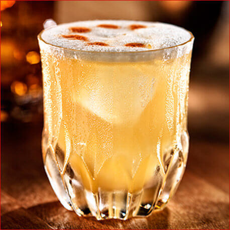
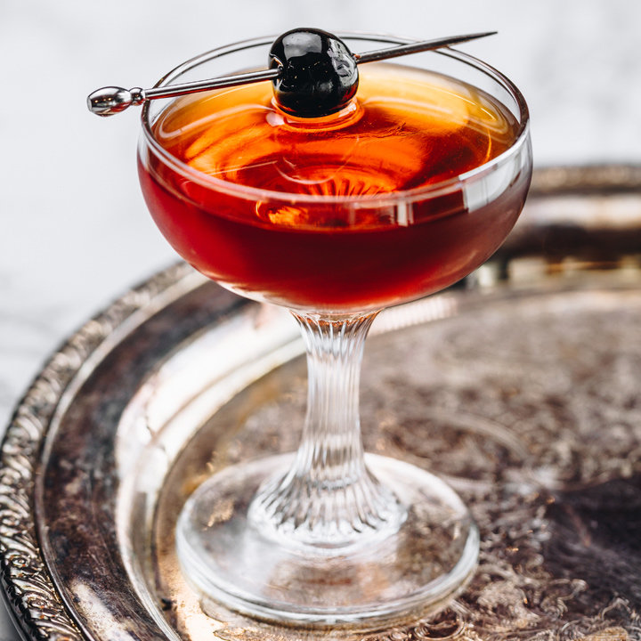
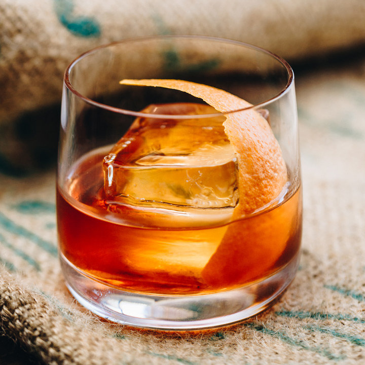

Whiskey Sour

Ingredients
- 50ml bourbon
- 25ml lemon juice
- 15ml sugar syrup
- An egg white
- Maraschino cherry (garnish)
- Orange slice (garnish)
- Ice
Method
- Put ice and all of the ingredients into a shaker and shake hard for about 20 seconds to chill the liquid really well.
- Strain the mix into a glass filled with ice and garnish with the cherry and orange slice.
Manhattan

Ingredients
- 50ml bourbon or rye whiskey
- 25ml rosso vermouth
- 5ml syrup from a jar of maraschino cherries
- 2 dashes Angostura bitters
- Maraschino cherry (garnish)
- Lemon twist (garnish)
- Ice
Method
- Fill a mixing glass or cocktail shaker with ice.
- Add whiskey, sweet vermouth, bitters and cherry syrup.
- Stir for 90 seconds.
- Strain into a martini glass and garnish with cherries and lemon.
Old Fashioned

Ingredients
- 50ml whiskey
- 1 teaspoon caster sugar
- 4 dashes Angostura Bitters
- 1 orange
- Cubed ice
Method
- Add your sugar to a rocks glass with 4 dashes of Angostura Bitters and a splash of hot water. Stir the mix until you have dissolved all of the sugar.
- Add 3 or 4 ice cubes and half of the Scotch whiskey and stir for around 60 seconds. Top up the glass with more ice and add the rest of the rye whiskey, then stir for another 60 seconds.
- Garnish with orange peel.